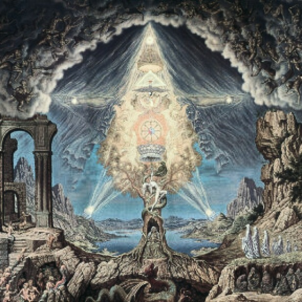

Подземный мир древнегреческой мифологии: царство Аида между памятью и вечностью
Подземный мир в древнегреческой мифологии, также известный как царство Аида, является местом, куда отправляются души умерших. Это мрачное и темное место, управляемое богом Аидом, братом Зевса и Посейдона. Вход в подземный мир охраняет трехголовый пес Цербер, а души переправляются через реку Стикс на лодке Харона, за плату в виде монеты, положенной в рот умершему.
Для древних греков смерть не была концом существования, а лишь переходом в сложно устроенный подземный мир, где тени умерших продолжали свое призрачное бытие. Это пространство, одновременно пугающее и необходимое, представляло собой не просто мрачную тюрьму душ, а целую вселенную со своими законами, географией и иерархией. В отличие от монотеистических представлений об аде, греческий Аид был многомерен — в нем находилось место и для страданий, и для блаженства, и для вечного забвения.
Подзе́мный мир — загробный мир, расположенный под землёй, в отличие от небесного и расположенного за тридевять земель. Понятие Подземного мира различно в мифологиях разных народов
География загробного царства.
Подземный мир мыслился как сложная система уровней и областей, окруженная пятью священными реками:
1. Стикс — река ненависти и клятв, через которую Харон перевозил души (за плату в 1 обол, который клали умершим под язык).
2. Ахерон — "река скорби", впадающая в Коцит (озеро плача).
3. Лета — вода забвения, стирающая память (позже связанная с орфическими культами).
4. Флегетон — огненная река, омывающая Тартар.
5. Коцит — ледяной поток, куда впадали слезы грешников.
Вход в этот мир охранялся трехглавым псом Цербером, чьи лапы были обвиты змеями, а грива источала яд. За ним простирались асфоделовые луга — бескрайняя равнина, где блуждали тени обычных умерших, лишенные как мучений, так и радости. Гомер в "Одиссее" описывает это место как наполненное "бесплотными образами, лишенными силы", где герой едва узнает свою мать Анхисею.
Судьи и судьбы.
Распределение душ осуществляли три легендарных царя-судьи:
• Минос — бывший критский правитель, державший золотой скипетр;
• Радамант — его брат, отвечавший за души азиатов;
• Эак — сын Зевса, судивший европейцев.
Особые категории умерших попадали в специализированные области:
• Элизиум (Елисейские поля) для героев и благочестивых (как Менелай или Ахилл) — место вечного весеннего света;
• Тартар для бунтарей против богов (титанов, отдельных смертных);
• Острова Блаженных — высший уровень Элизиума для избранных (например, Кадма и Гармонии).
Ритуалы и культы.
Связь с подземным миром поддерживалась через:
• Элевсинские мистерии — тайные обряды в честь Деметры и Персефоны, дававшие надежду на лучшую загробную долю;
• Некромантейоны — оракулы мертвых (как в Эфире), где вызывали тени;
• Погребальные обычаи — подношения меда, молока и монет (для Харона).
Интересно, что в классический период (V в. до н.э.) появились "записные книжки мертвых" — золотые пластинки с инструкциями для душ (найдены в Южной Италии).
Философские интерпретации.
Платон в "Горгии" и "Федоне" переосмыслил Аид как:
• Место морального воздаяния (прообраз христианского суда);
• Символ очищения души через испытания;
• Аллегорию забвения истины (миф об Эре в "Государстве").
При этом орфики и пифагорейцы видели в подземном мире цикл перерождений, где душа странствует до окончательного освобождения.
Художественные образы.
В вазописи V в. до н.э. Аид изображали как:
• Мрачноватого, но величественного владыку на троне;
• Персефону с факелом и гранатом (символ брака и смерти);
• Сцены "сошествий" (Орфей, Геракл, Тесей).
Римляне (Вергилий в "Энеиде") добавили деталей — поля скорби для несчастных влюбленных, особые муки клятвопреступников.
Наследие в культуре.
• Христианство: концепция рая/ада вобрала элементы Элизиума и Тартара;
• Литература: от Данте (структура ада) до современных фэнтези-миров;
• Психология: "архетип подземного мира" Юнга как метафора бессознательного.
Этот сложный образ отражал греческое понимание смерти не как конца, а как иного модуса существования, где сохраняется связь между поколениями через память и культ предков. Даже в христианскую эпоху в греческих деревнях сохранялся обычай "трапез с умершими" — прямое наследие античных представлений.